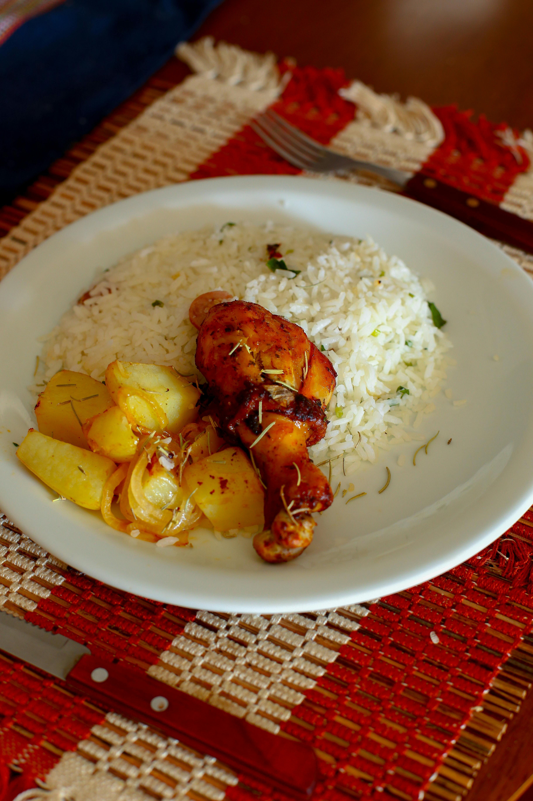

Chicken and rice

Description
Rice with potatoes and fried chicken.
Ingredients
- 1 chicken thigh
- 2 potatoes
- 1 coup of rice
- 1 onion
- 5 coups of cooking oil
- 1 spoon of salt
You can also include vegetables, and other spices.
Steps
- Wash and peel the potatoes
- Add water to a pot with the potatoes, and 1/2 spoon
of salt
- Heat the pot and boil the potatoes until they are soft
- Add 4 coups of cooking oil to another pot, and heat it to
medium temperature
- Once hot the oil, add the chicken thigh
- Add 1/4 spoon of salt
- Cook the thigh on each side until it be browned
- Remove the chicken to a plate
- Wash the rice and the onion
- Slice the onion
- Add watter to the pot with 1/2 spoon of salt, then the
rice, and the sliced onion
- Place a lid to the pot and cook the rice and onion
for 10 minutes
- Add the chicken to the pot and keep cooking for
15 minutes
- Extract the potetoes to a clean plate, dice them in small
pieces
- Serve the cooked chicken with them
- Stir the rice and add it to the plate
Enjoy your rice and chicken!
Links